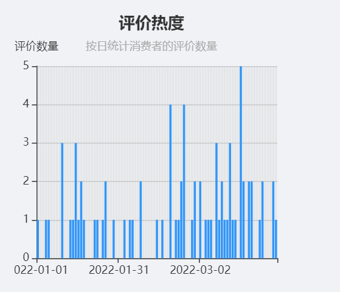
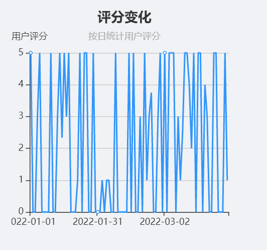
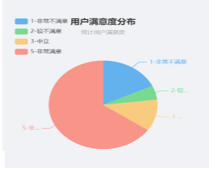
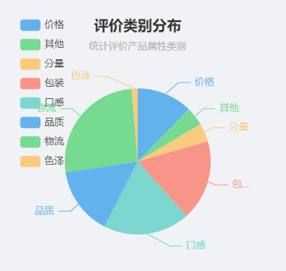

安徽巢湖番茄2022年第一季度电商销售白皮书
一、
产品内容简介
安徽巢湖因其湿润季风气候以及良好的土壤肥力条件而盛产番茄，其中以中垾番茄最为出名。中垾番茄作为全国农产品地理标志，种植历史悠久，果肉厚，无空洞果，生食口感甜酸适口，肉质面沙，风味好，生熟食兼用，富含多种营养元素，具有健胃消食，生津止渴，润肠通便等功效。此外，番茄中所含番茄红素具有独特的抗氧化作用，对防癌抗癌，延缓衰老有良好的辅助治疗作用。
二、安徽巢湖番茄2022年第一季度消费基本走势
总的来说，消费者对番茄整体较为满意，综合评分为3.90，但是安徽省巢湖市番茄2022年第一季度的消费热度处于较为低迷的状态，平均每天小于1条评价。这与番茄的生长周期及最佳销售时间有关。尽管番茄在一年四季中都有供应，但是事实上，番茄属于秋冬季的水果，一般在7—9月份开始成熟收获上市，10-12月份则是盛产期。因此，1-3月份番茄的消费热度自然呈现低迷状态，未达到最高峰。
具体来说，从评价热度看，安徽省巢湖市番茄2022年第一季度的消费热度处于较为低迷的状态，但总体体现出热度上升的规律，其中，受春节的影响，二月份番茄的消费热度最为低迷，随着气候变暖，直至三月份番茄的消费热度开始逐渐攀升。

从消费者的评分变化来看，可以看出安徽省巢湖市番茄2022年第一季度的消费者评价以3-4分居多，其中0分和5分评价的占比都较大，从整体上看，消费者的评分变化不太稳定，这证明番茄的质量参差不齐，处于较为随机的状态。但是从整体上来说，消费者对番茄的综合评分为3.90，处于较为满意的评分阶段。

三、安徽巢湖番茄2022年第一季度消费分析概览
（一）用户满意度分析
从安徽巢湖番茄2022年第一季度的用户满意度分布来看，约65%的消费者都表示对于安徽巢湖番茄非常满意，但也有约18%的消费者对于安徽巢湖番茄表示非常不满意，这也说明了从整体上看，消费者对于安徽巢湖番茄的评价较为良好。

（二）用户评价分析
从安徽巢湖番茄2022年第一季度的用户评价类别分布来看，消费者评价最多的集中在物流、口感、包装以及品质。其中，物流方面的评价占了19%，口感及包装分别占了14%和13%，其次是品质，占比11%。这在一定程度上表明对于番茄这种新鲜易坏的产品，消费者比起品质更加在意其物流质量，例如是否发货快、运输快以及损坏程度等。

四、安徽巢湖番茄2022年第一季度情感分析概况
（一）正面情感分析概况
从安徽巢湖番茄2022年第一季度的情感分布来看，在价格、包装、口感、品质、颜色方面，均以正面情感为主，这说明安徽巢湖番茄在这些方面表现较为良好，受到了消费者的普遍喜爱。其中，在包装和颜色方面，均获得了100%的满意率，这说明安徽巢湖番茄在产品的颜色鲜艳度以及包装的精美程度上具有较强的竞争力。此外，口感和品质也分别获得了约93%和73%的满意率，这也在一定程度上体现了巢湖番茄的软糯口感深受消费者喜爱。
（二）负面情感分析概况
从安徽巢湖番茄2022年第一季度的情感分布来看，消费者评价的负面情感集中分布在分量和物流方面。其中，关于分量较小的负面评价占比约67%，关于物流较慢的负面评价占比约63%。这说明安徽巢湖番茄在分量上有所欠缺，在物流方面也不够完善
。
五、安徽巢湖番茄营销建议
（一) 政府方面
1. 建立产品立体营销体系，实现地区产品权威认证。
安徽巢湖又被喻为“番茄之乡”，同时还获得了农业部地理标志农产品认证以及“全国名特优新农产品”名录，在具备如此权威认证的条件下，各级政府部门更要经营好城市形象，进一步将安徽巢湖和番茄品牌形成联动，建立专门的农产品推广中心，结合新媒体、传统媒介以及如今的短视频平台，形成线上+线下的推广渠道机制，将番茄基地与企业以及政府部门进行联动，形成部门团建乃至城市文化的“打卡点”。
2．大力推广品牌文化，扩大产品知名度。
产品知名度的提升可以通过举办或参加多种相关活动来进行。政府部门可以适当引导或组织产品节日或比赛，如将番茄和美食结合起来，开办番茄美食文化节，进行番茄展销，同时结合当下流行的元素如大胃王比拼、美食烹饪大赛、一个番茄的多种吃法等活动进行大力宣传。又如组织参加番茄种植比赛，进行番茄采摘和品尝活动等，同时鼓励主流媒体对其进行宣传报道，从而进一步扩大番茄知名度，实现产销对接，畅通番茄销售渠道，推动巢湖特色农业经济发展。
3.构建“番茄+”模式，打造跨界融合产业集聚。
品牌建设需要构建全产业链，要通过集聚化实现规模化，集聚化发展可充分提高资源的高效利用。政府应该突出抓好巢湖特色农产品番茄品牌，以其为核心，大力推进产业融合发展，鼓励周边劳动力通过“番茄+等途径增强番茄品牌的丰富度。通过建设番茄基地，打造旅游、采摘、观光示范点，还可以将番茄品牌进一步与电子商务、休闲旅游、健康养生、脱贫攻坚等跨界融合，释放巢湖番茄金字招牌的市场效应。例如，番茄+餐饮业，便可大力培育特色餐饮产业链，番茄+旅游业，便可将靠湖、靠城优势转化为农旅休闲观光优势。此外，通过番茄的品牌价值，还可以采取番茄+其他农作物的推广宣传模式，带动番茄、西瓜、甜瓜、蔬菜等其他经济作物齐头发展，结合特色采摘发展乡村休闲旅游，实现脱贫和营销双赢。
（二）生产厂家方面
1．提高产品产量，注重产品分量。
安徽巢湖凭借独特的自然资源，大力发展番茄种植。但是由第一季度产品数据发现，消费者普遍反映番茄产品的分量不足，这可能与第一季度的番茄产品还未完全成熟上市，因此厂家应该更加注重提高产品产量，一定程度上增大产品分量。
2.打破农业季节性，积极创新跨季新品种。
番茄在传统意义上属于是季节性水果，而第一季度往往不是其成熟上市的季节，因此厂家可以在保持原有传统番茄种植基础上，打破传统农业的季节性，积极调整种植结构，冬季可以种植小番茄，延长采收期。此外，在人们的传统印象中，番茄主要是做菜，生吃为辅。因此厂家可以通过引进新的番茄品质来吸引消费者的消费兴趣，同时改变消费者对番茄的固有印象，例如水果番茄，紫色番茄、樱桃番茄等番茄品质，不断丰富番茄的种植新品种，打造跨季新品种，顺利度过季节衔接期。
（三）第三方平台方面
1.明晰产品用途，精确消费者画像
第三方平台在产品的推广宣传中，可以针对不同的番茄用途精确消费者画像。如学生党可能偏向于制作番茄酱、减肥等功能，厨房小白可能偏向于制作简单等，而上班族则偏向于便携、方便等功能，老年人可能更加注重番茄的健康功能。因此，明晰产品用途后，平台便可针对不同消费者人群采取不同的营销手段，如宣传番茄的减肥功能并赠送番茄瘦身食谱、宣传番茄做饭的百搭功能并赠送“一日三餐番茄食谱教程”或者着重注重宣传番茄的养生功能以及对身体的有益影响，制作科普视频等。
2.注重宣传食品安全及生产规范
番茄作为食品，食品安全无疑是消费者关注的热点。因此第三方平台在宣传推广时，可以通过发布生产车间、种植大棚照片等方式增强产品的生产规范性，同时，还可将农残检测证书等予以公布，可在最大程度上获得消费者的信任。
（四）消费者方面
消费者在购买番茄产品时需要着重关注番茄的食品安全，学会辨别相关商家的资历和资格证书；另一方面，消费者可以增加对番茄的了解，关注不同时间段的主推番茄品种，从而提高自己的消费体验感。